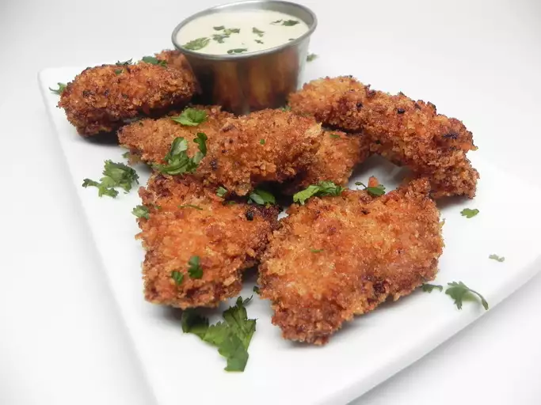

Karaage with Honey Mayoster Sauce

Description
Japanese chicken karaage is a popular and delicious dish that consists of bite-sized, boneless chicken pieces that are marinated in a flavorful mixture of soy sauce, ginger, garlic, and other seasonings. The marinated chicken is then coated in a light layer of potato starch or cornstarch before being deep-fried until golden brown and crispy. The result is tender and juicy chicken with a crispy exterior.
Mayoster sauce, a combination of mayonnaise and soy sauce, is often served as a dipping sauce alongside chicken karaage. This sauce adds a creamy and savory element to complement the crispy and flavorful chicken. The combination of the savory karaage and the creamy mayoster sauce creates a delightful balance of textures and tastes, making it a beloved dish in Japanese cuisine.
Ingredients
- 1.5 tablespoons low-sodium soy sauce
- t tablespoon honey
- 2 teaspoons minced garlic
- 2 teaspoons fresh ginger
- 1 pound skinless, boneless chicken thighs, cut into bite sized pieces
- 1 egg
- 1 cup panko bread crumbs
- vegetable oil for frying
Sauce:
- 1.5 cup of Japanese mayonnaise
- 2 tablespoons of honey
- 2 tablespoons of Dijon mustard
- 3 tablespoons of mirin (Japanese sweet wine)
- 1 tablespoon of low-sodium soy sauce
Steps
- Mix 1 1/2 tablespoon soy sauce, 1 tablespoon honey, garlic, and ginger together in a bowl. Add chicken; turn to coat. Marinate in the refrigerator, 8 hours to overnight.
- Whisk egg in a bowl until smooth.
- Pour panko bread crumbs into a shallow bowl. Dip chicken pieces in whisked egg and roll in panko until coated.
- Heat oil in a deep-fryer or large saucepan to 350 degrees F (175 degrees C). Cook chicken in batches in the hot oil until golden brown, about 5 minutes. Transfer to paper towels to drain excess oil.
- Mix Japanese mayonnaise, 2 tablespoons honey, Dijon mustard, mirin, and 1 tablespoon soy sauce together to make sauce. Pour sauce over chicken.